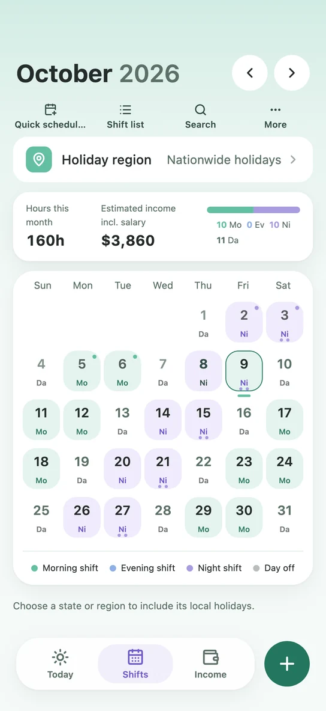

Your shifts, hours and estimated pay.
Plan rotating shifts, record actual hours and breaks, and estimate pay before payday. See shifts from multiple jobs in one calendar.
Download on the App StoreFree to download for iPhone and iPad. Optional Pro subscription.

Plan a rotating schedule
Add early, late and overnight shifts using your own hours and colors. Set up a repeating rotation and see shifts from different jobs in one calendar.
Log the hours you worked
Record actual start and finish times, unpaid breaks and allowances. Keep notes, reference photos and to-dos attached to the relevant shift.
Estimate earnings before payday
Apply your pay rate and overtime settings. Review estimates by pay period, then record what was actually deposited.
Core scheduling, time records and pay estimates work without an account. Pro adds reminders, exports and backup options.
Download on the App Store